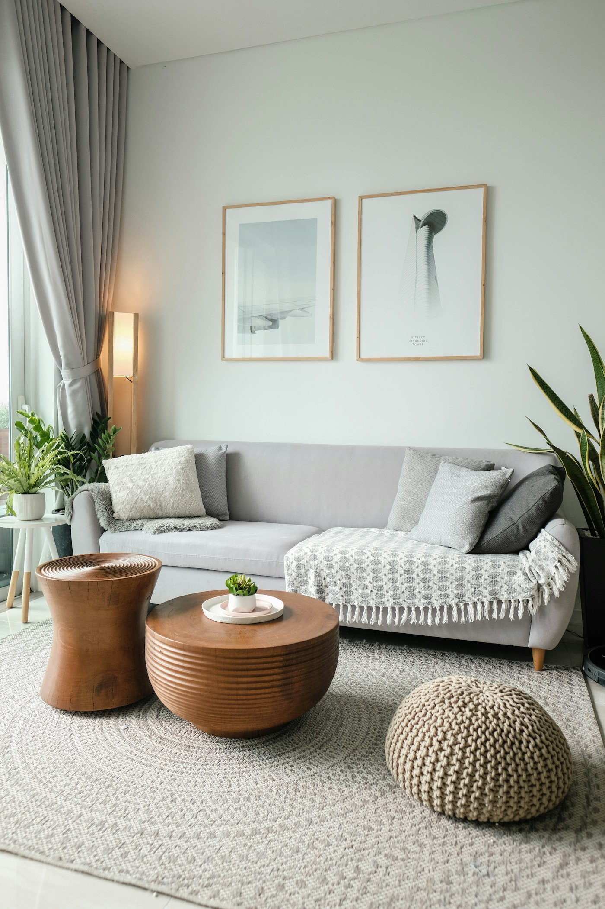
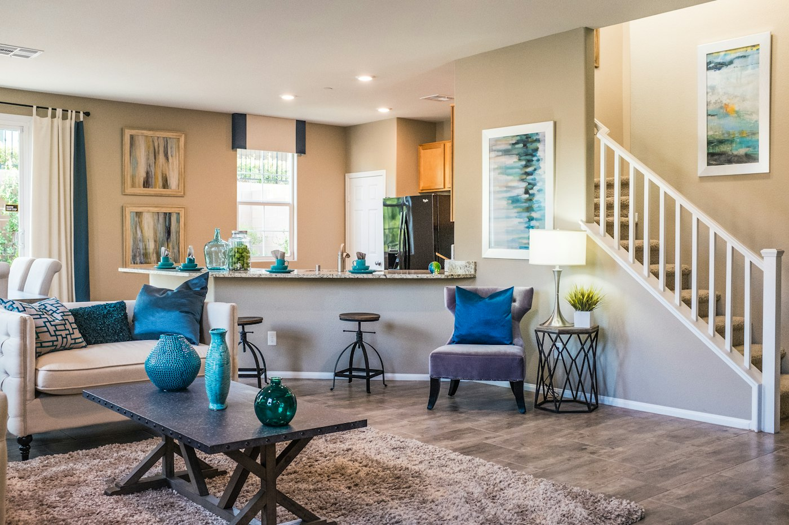
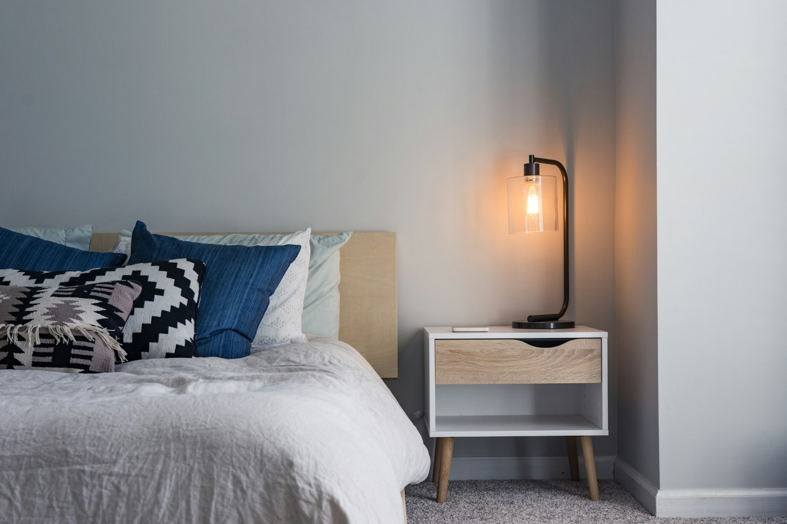

Huerkamp Home Group
Free guide
Room-by-room ways to make your home look its best in photos and showings, without a big bill.
Free guide for Twin Cities home sellers
Buyers decide which homes to see from the photos, and decide how they feel about a home in the first few minutes inside. Staging is simply helping them picture living there. Most of it costs more effort than money.
This guide goes room by room, starting with the spaces buyers care about most. When you are ready, our selling page explains how we market homes. Questions? Call or text us at (612) 502-7653.
Start everywhere
Clear counters, tabletops, closets and floors before you buy a single pillow. Pack about half of what is on shelves and in closets. Empty space reads as "plenty of room"; full space reads as "not enough".
Put away most family photos, collections, kids' art and anything with names on it. Buyers should picture their life here, not yours. Keep a few neutral pieces so the home still feels warm.
Windows, baseboards, light fixtures, grout and appliances. A deep clean, inside and out, is the cheapest improvement there is, and buyers notice when it hasn't been done.
Open every blind and curtain, replace burned-out bulbs, and use the same warm-white bulbs throughout. Add a lamp to any dark corner. Bright rooms photograph larger.

Cover bold or dated colors, scuffed walls and smoke or water stains with a soft neutral. Paint is usually the best-returning thing you can spend on before listing.
Room by room
Pull furniture away from the walls into a conversation group, remove extra pieces and open a clear path through the room. Fewer, well-placed pieces make a room feel bigger.
Leave out no more than two or three items. Clean the stovetop and oven, empty the sink, and organize the inside of cabinets and the pantry; buyers open them.
Crisp bedding, matching nightstands and lamps, nothing under the bed and half-empty closets. The goal is calm and spacious.

New white towels, a fresh shower curtain, clean grout and caulk, and nothing on the counters but soap. Replace a worn toilet seat or dated faucet if the budget allows.
A spare room with boxes and a treadmill is "storage". Stage it as an office, guest room or nursery so buyers count it.
Clear storage into one corner or a storage unit, light the space well and stage a sitting area. In Minnesota a finished lower level is valuable living space; show it that way.
Outside and the first impression
Mow, edge, trim shrubs, pull weeds and add a few potted plants by the door. Power-wash the walk and driveway. A tidy outside tells buyers the inside was cared for too.
Clean or paint the door, polish or replace the hardware and house numbers, add a new mat and make sure the light works. It's where every showing starts.
Keep the drive and walks clear and salted, add a boot tray and mat inside the door, keep the home warm and every light on. Have summer photos of the yard and gardens ready for the listing.
Photos and showings
Photographers shoot wide, so everything shows. Hide trash cans, cords, pet bowls, fridge magnets and toiletries before photo day. Turn on all the lights and open the blinds.
A 15-minute checklist (beds made, counters clear, trash out, lights on) makes it easy to say yes to every showing. A bin for last-minute items helps.
Air out the home, clean pet areas and skip strong air fresheners and cooking smells before showings. Set the temperature for comfort.
A stager can be worth it for vacant homes, unusual layouts or higher price points. Ask your agent what is typical in your price range before you spend.
Ready when you are
Huerkamp Home Group has helped buyers and sellers across the Twin Cities since 2002, and has been a Dave Ramsey Endorsed Local Provider for more than 15 years.
Sources
Photos: Minh Pham (cover), Quilia and Christopher Jolly on Unsplash. General information, not legal, tax or lending advice. Rules and programs change; confirm details with your lender, title company, tax adviser or attorney. Huerkamp Home Group is a team of licensed REALTORS® with Keller Williams Preferred Realty. Equal Housing Opportunity.